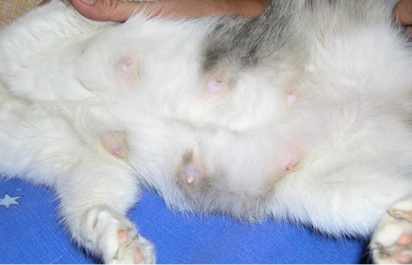

Что такое опухоль?
Разрастание патологической ткани, которая похожа на обычную ткань организма. Опухоли или неоплазии или новообразования могут вырастать из любой ткани. Как часто вы встречаетесь с опухолями молочной железы у животных? 20% всех обратившихся в клинику животных – животные с новообразованиями, чаще всего с опухолями молочной железы (ОМЖ) , реже – опухоли селезенки, печени, кожи, костей.
У каких животных чаще встречаются ОМЖ, в каком возрасте?
Чаще у кошек старше 4-5 лет, у не стерилизованных, и у тех, кому владельцы применяли гормональные препараты для подавления течки. У собак – суки старше 5 лет, не стерилизованные, но чаще всего их опухоли не связаны с применением половых гормонов, собакам их дают крайне редко.
Есть ли стадии у опухолей молочной железы?
Конечно, есть, как и любых других опухолей. Стадия, которую поставит врач на приеме будет зависеть от размера опухолей, вовлеченности в процесс регионарных лимфоузлов, наличия отдалённых метастазов.
Какие исследования необходимо провести животному перед операцией?
Обязательно перед операцией сдавать общий и биохимический анализы крови, делать УЗИ сердца, УЗИ органов брюшной полости и рентген грудной клетки. Так же после операции необходимо сделать гистологическое исследование опухоли. Анализы крови нужны, чтобы знать, как в целом работает организм, нет ли почечной недостаточности. Сделать УЗИ сердца собаке или кошке нужно для выявления скрытых врожденных или приобретенных патологий. УЗИ органов брюшной полости– для выявления опухолей или метастазов во внутренних органах. Рентген для животных в области грудной клетки – для исключения метастазов в легкие. Если на этих исследованиях находятся отдаленные метастазы, операция не целесообразна. Если метастазов нет, по анализам и другим исследованиям все хорошо, то обязательно нужно настраиваться на оперативное вмешательство с последующим исследованием опухоли.
Всегда ли нужна операция?
Да, всегда. Операция проводится, чтобы опухоль не увеличивались и не разрастались. Т.к. опухоль имеет свойство созревать и вскрываться как абсцесс. Даже если владельцы не соглашаются на операцию ввиду того, что опухоль маленькая и находится на одном месте не один год, все равно необходимо ее удалить. Такая на первый взгляд безобидная опухоль может дать метастазы в легкие, а изменения будут заметны только лишь на последних стадиях. Появится кашель, или животное откажется от еды, и только лишь на УЗИ или рентгене можно обнаружить, наличие метастазов.
Когда проводят химиотерапию собаке или кошке?
Химиотерапию проводят только после результатов гистологического исследования. Желательно это делать всегда, если опухоль оказалась злокачественной. Даже после удачной операции, опухоли могут вырасти на том же месте. Химиотерапия полного выздоровления не даст, однако мы с помощью этих препаратов сможем остановить процесс дальнейшего появления злокачественных клеток.
Оказывает ли влияние стерилизация кошек и собак на развитие ОМЖ?
У кошки и собаки, стерилизованных до первой течки, риск развития опухолей молочной железы снижен на 70%, по сравнению с нестерилизованными. Если кошка или собака были стерилизованы после первой течки – риск снижается на 30%, если же после второй – риск остается одинаковым у стерилизованные и у не стерилизованных.